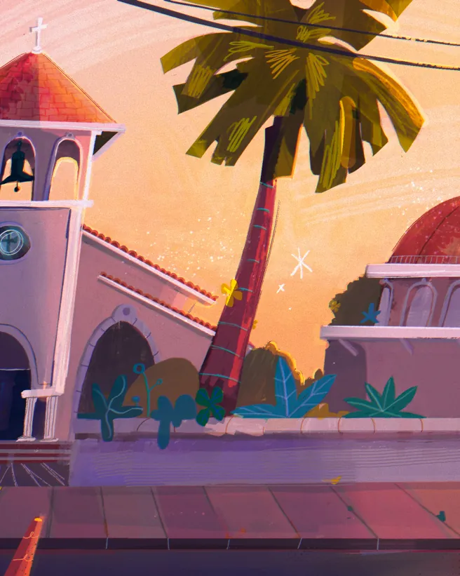

Piezas
Ilustración de nadadoras sincronizadas formando una flor en una alberca azul
Fondo nocturno de una ciudad junto a un río, con un reloj iluminado
Fondo de un avión cruzando un cielo violeta y dorado
Escena nocturna con una figura vestida de blanco bajo dos luces
Personaje con sombrero de charro y vestido bordado
Virgen de Guadalupe con rayos amarillos y la frase «mexicana hermosa»
Tres personajes con trajes tradicionales mexicanos
Dos personajes pelirrojos, de frente, con ropa de cuadros
Fachada pintada con letras de «Más tequila» y cortinas de flecos
Fondo oscuro de una selva con luces de neón
Avión azul dejando una estela en un cielo lila
Fondo en blanco y negro de una cruz y una figura con vela
Estudio de valores en gris de un interior con columnas
Propuestas visuales inspiradas en mi cultura: brillante, colorida y rica.
Sobre mí
Soy Daniela Chavarría, artista de desarrollo visual e ilustradora en México.
Me apasiona crear propuestas visuales nuevas, inspiradas en mi cultura brillante, colorida y rica, para proyectos que me reten.
Estudié Animación en la Universidad de Monterrey (UDEM) y terminé el segundo año de la maestría en Visual Development de IDEA Academy, en Roma.
- Animación (BFA)Universidad de Monterrey
- Maestría en Visual DevelopmentIDEA Academy, Roma
- Directora de arteFotosíntesis Media
Lo que hago
Desarrollo visual
Mundos, paletas y ambientes para animación.
Fondos
Escenarios de día y de noche, pensados para la pantalla.
Ilustración
Personajes y piezas con todo el color de lo mexicano.